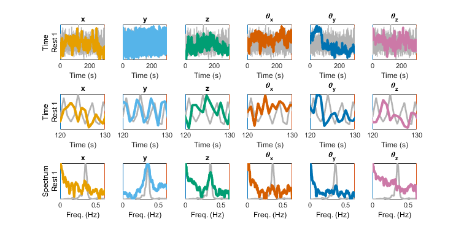
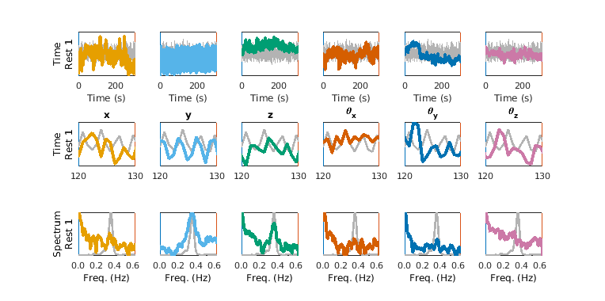
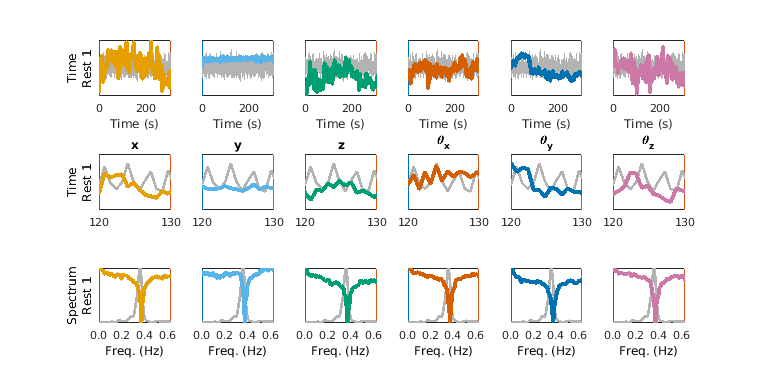

To run cat_mov_reg_power.m
Contents
Credit and date
Code developed by Oscar Miranda-Dominguez.
First line of documentation: July 2018
Intro
This is a companion figure to cat_mov_reg_power. It shows the power spectra from each movement regressor
Dependencies:
Before using it, make sure you have the functions this code needs:
- power_per_Resting.m | in rushmore: /mnt/max/shared/code/internal/utilities/mov_reg_power/power_per_Resting.m
- importMovReg_patch.m | in rushmore: /mnt/max/shared/projects/filtering_movement_regressors/matlab_code/importMovReg_patch.m
- read_aliased_PMUextracted.m | in rushmore: /mnt/max/shared/projects/filtering_movement_regressors/matlab_code/read_aliased_PMUextracted.m
- make_friston_regressors.m | in rushmore: /mnt/max/shared/utilities/HCP_Matlab/make_friston_regressors.m'
Basic usage
The two mandatory input arguments for this function are:
- the path to the Movement Regressors files made by the pipelin. in this casi it is only the path to a single file (not a cell with paths to multiple Movement Regressors files as in cat_mov_reg_power
- TR, BOLD's repetition time
Example 1
% cd /mnt/max/shared/code/internal/utilities/mov_reg_power % move to the folder to save the data f=filesep; TR=0.8;% TR in seconds ver=1; % Path to Movement regressors file dest_path='/mnt/max/shared/code/internal/utilities/mov_reg_power/mov_reg_files/subject_with_PMU_data'; path_mov_reg=[dest_path f 'random_ix_1_ver' num2str(ver) '_Movement_Regressors.txt']; CLIM=power_per_Resting(path_mov_reg,TR);
Show PMU data if available
Make the same figure and show PMU data if available
PMU_path=[dest_path f 'random_ix_1_PMUextracted.mat']; CLIM=power_per_Resting(path_mov_reg,TR,'PMU_path',PMU_path);
Show filtered data
Original data
CLIM=power_per_Resting(path_mov_reg,TR,'PMU_path',PMU_path); ver=2; path_mov_reg=[dest_path f 'random_ix_1_ver' num2str(ver) '_Movement_Regressors.txt'] % Filtered data CLIM=power_per_Resting(path_mov_reg,TR,'PMU_path',PMU_path,'clim',CLIM);
path_mov_reg =
'/mnt/max/shared/code/internal/utilities/mov_reg_power/mov_reg_files/subject_with_PMU_data/random_ix_1_ver2_Movement_Regressors.txt'
 